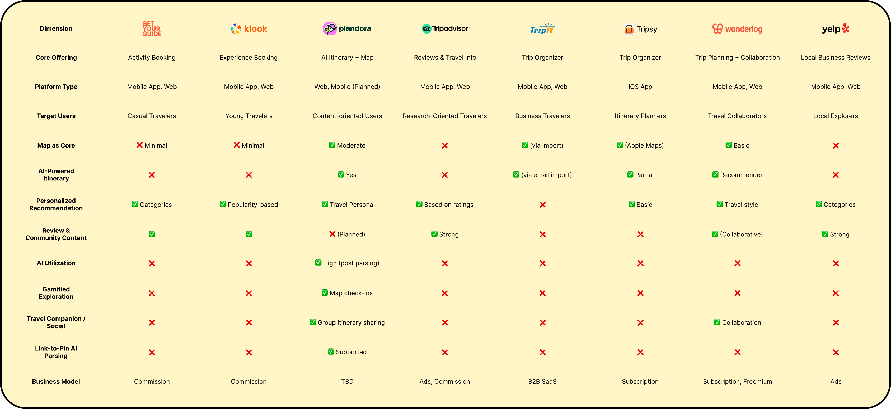
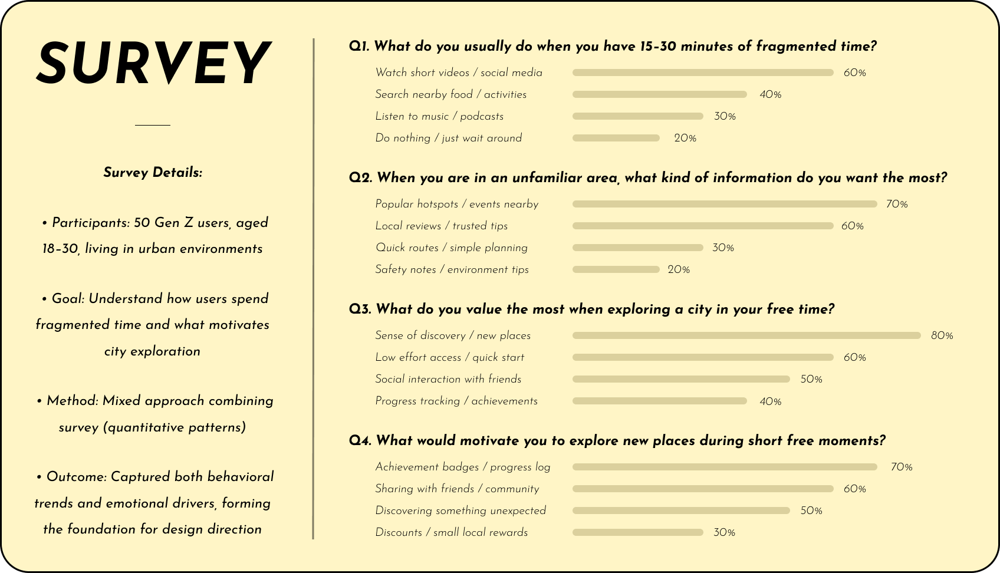
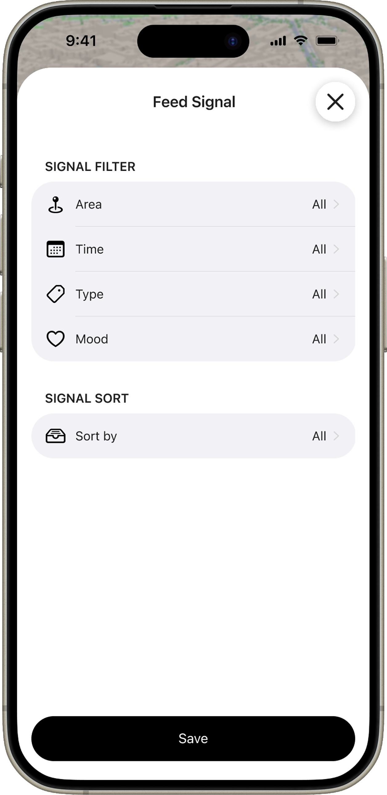
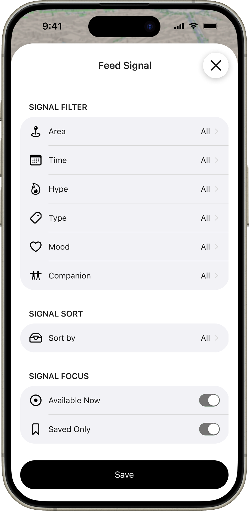
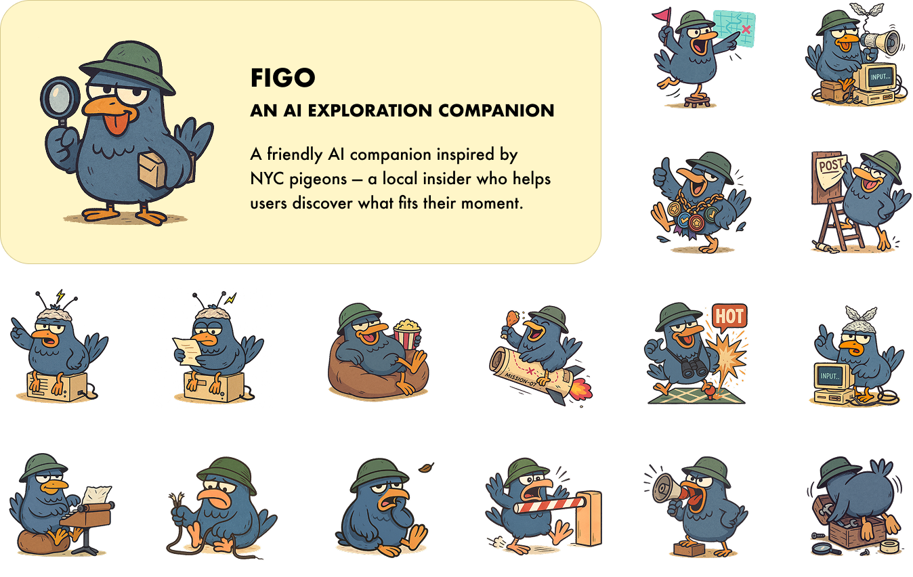
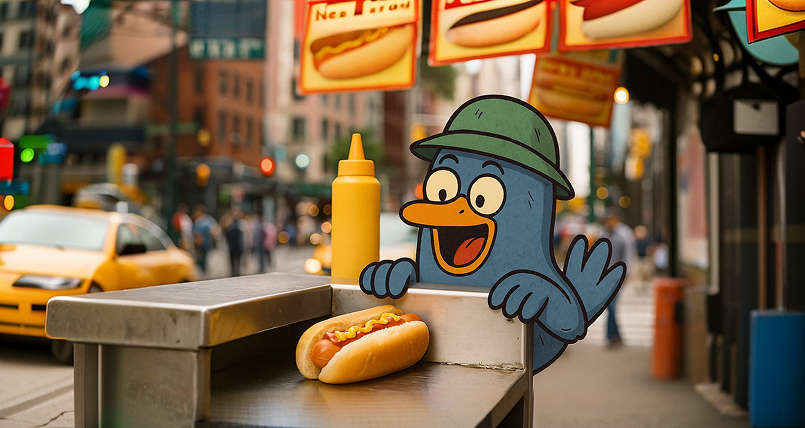
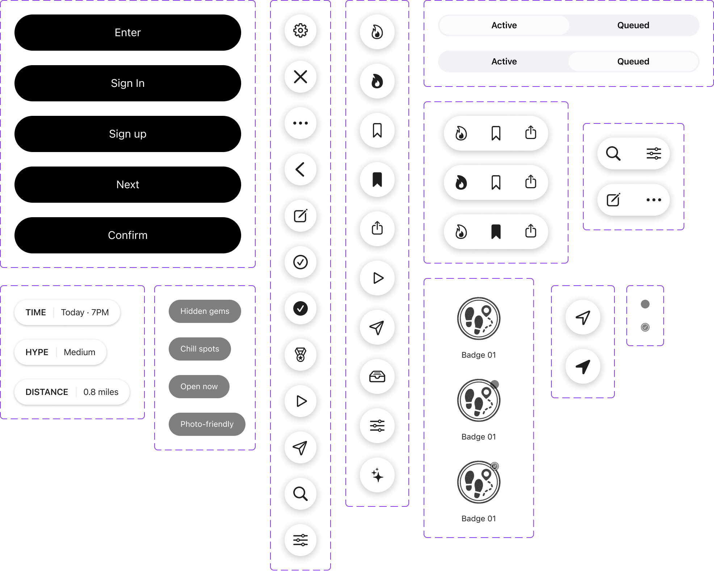

Designing an AI city exploration platform that turns vague intent into confident real-world action
North America2025
/ 01
Overview
Polyverse is an AI-powered city exploration platform designed for moments when people want to go out but do not yet know what they want to do. It translates context such as time, location, mood, and company into possibilities users can evaluate and act on.
As the only product designer, I led the product from strategy and research through interaction design, AI experience design, prototyping, validation, and the design-system foundation—turning an open-ended opportunity into a coherent product direction and testable experience.
Role
Lead Product Designer
Owned product strategy and stayed hands-on across research, AI interaction, prototyping, testing, and visual execution.
Scope
End-to-End Exploration Platform
Defined the core journey, recommendation model, refinement behavior, scalable system, and beta product direction.
Team
Cross-functional Product Team
Partnered closely with the founder, engineers, marketing, and community contributors.
/ 02
Opportunity
Urban Exploration Opportunity
People often begin city exploration with a feeling rather than a destination: a free hour, a desire for somewhere quiet, or simply the urge to get out. Most tools assume users already know what they want and optimize isolated tasks such as search, reviews, planning, or booking.
This created a gap between inspiration and action. Polyverse could connect discovery, evaluation, and action into one context-aware journey—helping people understand what is realistically possible now without assembling an answer across maps, reviews, social feeds, and messages.

/ 03
Research
Research Approach
I combined interviews, a survey of 50 urban Gen Z participants, competitive research, usability testing, and observation. Rather than treating individual feature requests as requirements, I looked for recurring behavior patterns across the end-to-end journey.
The research showed that exploration frequently began with loose situational intent, while planning required people to compare fragmented information across several products.

Key Insights
Two patterns changed the direction of the product. First, exploration starts with a situation—time, mood, location, or company—not a predefined destination. Second, users were not missing options; they were missing a coherent way to decide which option fit the moment.
How exploration beginsA situation, not a destination
One free hourSomewhere nearbyQuiet, with a friendLow effort
People begin with partial context and discover what they want through the process.
Where decisions breakPlanning fragments across tools
MapsReviewsSocialMessages
Each handoff adds comparison work without clarifying which option fits the moment.
/ 04
Design Approach
Product Vision
Polyverse would turn open-ended exploration into real-world action. Instead of requiring users to formulate the perfect search, the product would accept loose intent, assemble relevant context, and help people progressively recognize what felt right.
The work followed two experience commitments: make vague intent actionable without asking people to know exactly what they want first, and connect fragmented planning into one continuous journey.
Experience principle 01Turn vague intent into contextual action
Help people discover possibilities without requiring them to know exactly what they want first.
Experience principle 02Connect fragmented planning into one journey
Bring discovery, evaluation, and action into the same experience instead of distributing them across apps.
AI Principles
AI should reduce the work of forming and refining a decision, not claim authority over the final choice. Recommendations needed to explain why they fit, preserve multiple possibilities, and make feedback part of the same conversation.
01Interpret context
Translate time, place, mood, and company into useful constraints.
02Explain the fit
Make each recommendation understandable and actionable.
03Preserve control
Support progressive refinement instead of choosing for the user.
/ 05
Core Journey
Connecting the Planning Journey
I first addressed the more direct research problem: planning was fragmented across maps, reviews, social media, and messages. I organized the core experience as one continuous journey so users could move from loose intent to real-world action without rebuilding context elsewhere.
Product experienceConnected journeyFrom loose intent to a city experience
Recognize the momentStart with available time, mood, location, and company.
Discover possibilitiesSee options shaped by the current context.
Evaluate the fitCompare what is relevant and realistically doable.
Plan and actSave, share, or navigate without switching tools.
Continue the journeyCapture progress and return to future possibilities.
After connecting discovery, evaluation, and action, I ran moderated usability tests to understand whether the integrated flow reduced planning friction—not only the number of tools people used.
Usability testing insight
“These feel relevant, but I’m still not sure where to go.
Participant in a moderated usability test
The Remaining Confidence Gap
Testing showed that the integrated journey largely solved the switching problem. But it exposed a deeper issue: even when recommendations looked relevant, users still hesitated because they could not tell whether an option actually fit their current situation.
What improvedPlanning stayed in one place.
Users could discover, evaluate, and act without moving between products.
What remainedRelevance did not create confidence.
Users still needed help recognizing what was realistically doable now.
/ 06
Exploration & Validation
Decision 01From Relevance to Actionability
Observed confidence gap: The connected journey reduced switching, but one pattern remained: even when recommendations looked relevant, users were still not confident enough to decide where to go.
Usability testing insight
“Why are users still hesitant, even when recommendations feel relevant?
Research synthesis
First hypothesis: Maybe users hesitated because the results simply were not specific enough. I explored a more advanced filtering experience with additional categories, contextual signals, and combinations intended to narrow the options more effectively.
First hypothesis
More specific filters would reduce hesitation.
I tested whether giving people finer control over categories and contextual signals would make the recommendation set feel specific enough to act on.

Initial filters

Expanded filters
What testing revealed: More filters narrowed results, but they shifted the burden onto users to know what to ask for. Reframe: I moved the product question from “Is this relevant?” to “Is this something I can realistically do right now?”
01 · Static relevanceIt matches
Category, popularity, and proximity suggest a potentially relevant place.
02 · Context checkIt fits now
Time
Location
Mood
Company
Effort
03 · Actionable optionI can do this
The recommendation explains why it works and what the user can do next.
Iteration: I replaced filter configuration with conversational context. Users could describe their situation naturally while the system surfaced a focused set of activities, explained why each fit, and reduced the effort required to move forward.
IterationRecommendations grounded in the current moment
The experience brings forward options that already fit the user’s situation and makes the reason visible.
Decision 02Designing for Progressive Refinement
Pattern from the next test: A second usability study showed that people understood and trusted the contextual recommendations more quickly. But some closed the first set, rewrote their description, and started again—not because the options were poor, but because describing a personal situation perfectly in one prompt was difficult.
Usability testing insight
“These are close, but not quite me.
Participant in the second moderated usability test
Trade-off: The team could keep improving the one-shot answer, or design for the reality that intent becomes clearer through interaction. I advocated for preserving useful context and letting people refine what was still wrong.
PerspectiveStrategyDesign solution
Product perspectiveImprove the one-shot answer
Ask the model to infer more and make the first recommendation complete.
Design perspectiveSupport refinement over time
Keep useful context and let people progressively clarify what is still wrong.
Iteration: Every recommendation became the starting point for the next conversation. Users could keep what worked, react to what did not, and update the result without losing progress.
IterationAn exploration flow that develops with the user
The interaction shifts from delivering a one-shot answer to supporting an ongoing decision conversation.
/ 07
Final Design
Core Exploration Experience
The final product brings exploration, decision support, and a continuing relationship with the city into one experience. Users can begin with loose intent, discover what fits now, save or act on it, keep up with the community, and build a personal record of the places they explore.
Product experienceEnd-to-end experienceFrom a passing idea to an evolving city life
Set the contextDescribe available time, location, mood, and company.
Explore what fits nowDiscover activities shaped by the current situation.
Save and take actionKeep favorites, share plans, or navigate to the next step.
Stay connectedFollow city news and community moments beyond one visit.
Build a personal mapCollect explored places and achievements in Passport.
Figo: AI Exploration Companion
I designed Figo as the personality layer for the AI experience. Inspired by New York pigeons, Figo behaves like a local insider rather than a generic chatbot—introducing possibilities, guiding refinement, and making the intelligence feel approachable and memorable.
AI Exploration Companion


Design System
I built the foundations and reusable UI layer from scratch using Figma Variables, component variants, and Auto Layout. Color, typography, spacing, iconography, states, and component behavior were documented as a shared language between design and engineering.
The system helped the team implement new experiences faster, reduce repeated UI decisions, and preserve consistency as the beta product continued to evolve.
Color

/ 08
Impact
Polyverse established a validated direction for contextual city exploration: one connected experience that carries people from vague intent to an actionable next step.
Across prototyping and moderated usability tests, people explored more recommendations before leaving, needed fewer comparison loops, and completed planning more often without restarting. I evaluated that progress through behavioral signals—exploration, comparison, refinement, and completed actions—alongside qualitative feedback on where confidence increased or hesitation remained.
/ 09
Reflection
Polyverse reinforced that the most valuable product decisions often come from challenging a reasonable assumption rather than polishing its first solution.
Design the right problem: Better filters could narrow results, but reframing the problem around actionability created the meaningful shift.
Use AI to support judgment: The strongest experience did not deliver one perfect answer; it helped people refine their own decision.
Build systems for continued learning: A shared interaction and component foundation allowed product evidence to translate into faster, more coherent iteration.